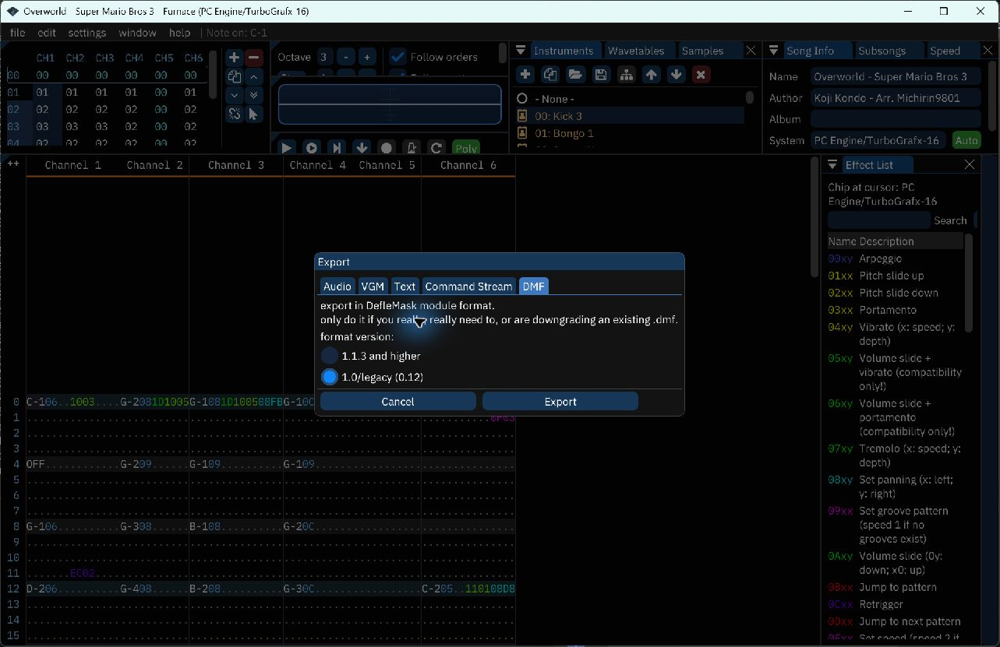
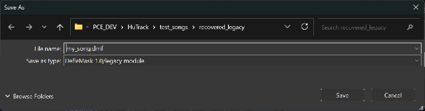
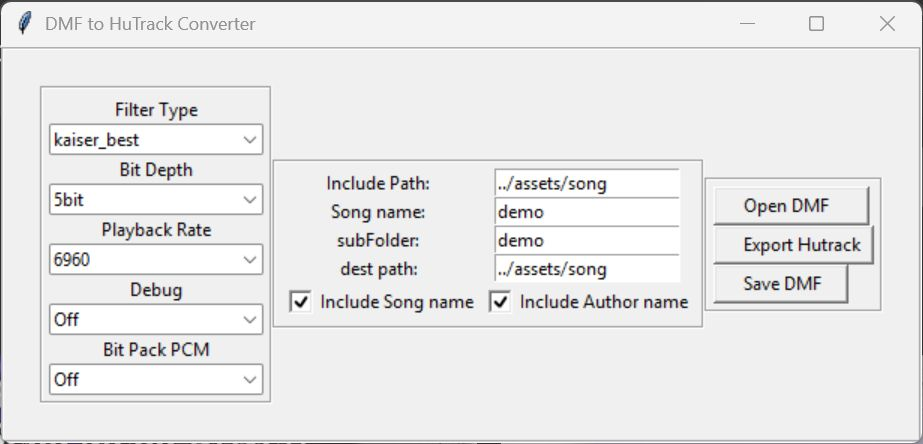
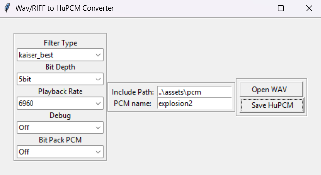

Requirements
HuTrack, by Turboxray, provides a DMF converter and a HuC6280 playback engine for the PC Engine / TurboGrafx-16. Both C compilers use the same music engine and converted assets; their startup hooks, ROM allocation and library integration differ.
- A recent 4.x toolchain distribution, including the matching compiler, PCEAS and headers. Choose
huc.exewithinclude/huc, orhucc.exewithinclude/hucc. - This HuTrack checkout. Its
libdirectory belongs on the include path. - Python 3 with
numpy,resampyand Tkinter for conversion. The converters import Tkinter even in command-line mode. - Furnace to edit/export songs, and an emulator or console to check the resulting ROM.
The commands below are Windows Command Prompt / .bat syntax. Set these paths to your installations in the same command prompt:
set "HUC_HOME=C:\huc"
set "HUTRACK_HOME=C:\Projects\PCE_DEV\HuTrack"
python -m pip install numpy resampy
python -c "import numpy, resampy, tkinter"Keep the compiler, assembler and include directory from the same toolchain build. These instructions cover current HuCard integration; CD overlays need their own memory and interrupt integration.
Project layout
Use one of the following configurations. Keep its customization files beside main.c, so the assembler finds them before the stock library files. There is no need to modify your installed toolchain.
game/
music/
my_song.dmf
assets/
song/
demo/ generated .inc bundle
pcm/ optional converted WAV files
main/
main.c
build.bat
HuC: lib_exclude.asm, libslot1.asm, sound.inc
HuCC: hucc-config.inc, hucc-sound.inc, hucc-final-extra.asm- Export a single-system PC Engine song as legacy DMF.
- Run the converter from
game/mainand retain its whole output bundle. - Install the configuration for your compiler, include the C interface and song, then build.
- Call
HuTrack_Init(), register songs withHuTrackEngine_QueueSong(), and start a registered song by index.
Create and export music
The playback reference is official Furnace 0.6.8.3's legacy-DMF support. HuTrack keeps period-based slides, with its original fast approximations for notes, vibrato and E5 fine tuning. It does not apply an extra noise-volume correction. See the compatibility notes and complete effect matrix for deliberate differences and format limits.
- In Furnace, use File → New and select PC Engine / TurboGrafx-16, or open an existing PC Engine DMF. Keep one six-channel PC Engine system.
- Compose/edit the song and save a
.furworking copy if desired. - Choose File → Export…, open the DMF tab, and select 1.0/legacy (0.12). Click Export, then save the conversion input as
game/music/my_song.dmf. Review Furnace's export warnings: native Furnace features can be lost in DMF. - Reopen the exported DMF in the reference release and listen to it before comparing with HuTrack. This includes Furnace's DMF import behavior in the comparison.
For these default VBlank setups, use the normal approximately 60 Hz music tick rate. PAL and custom-Hz songs require a custom scheduler; conversion does not retime them automatically.

Export legacy DMF: illustrated steps
These screenshots show the official Furnace 0.6.8.3 release with a PC Engine song loaded. The legacy choice is in the Export dialog, before the file picker.





Newer Furnace playback is not automatically the same reference: later development changed the mixed legacy pitch model. Use release 0.6.8.3 for parity comparisons. A native .fur file, VGM or audio export is not input to the DMF converter.
Keep notes within C0–B6, 1–256 rows per pattern, 1–127 orders, 1–4 effect columns and 32-sample waveforms. Effective row speeds must fit 1–255; instrument, waveform and sample tables each allow up to 128 entries. The converter rejects unrepresentable data and warns about unsupported effects. See the full constraints before using advanced macros or PCM features.
Convert a DMF
From game/main, run:
python "%HUTRACK_HOME%\utils\HuTrackConverter.py" --no_gui ^
--filein "..\music\my_song.dmf" ^
--destinationPath "..\assets\song" ^
--subfolder demo --songname demo ^
--includePath "../assets/song"This writes assets/song/demo/demo.song.inc and its companion header, instrument, pattern, waveform and PCM files. Use a simple assembler-safe name such as demo. Keep all generated files together, including empty PCM includes.
| Option | Meaning in this example |
|---|---|
--destinationPath | Filesystem output parent: ../assets/song. |
--subfolder | Child directory: demo. |
--songname | Generated file/label prefix: demo. Use distinct prefixes for multiple songs. |
--includePath | Path written into nested assembly includes. Use ../assets/song; the exporter adds /demo/ itself. |
Using the converter GUI
Run python "%HUTRACK_HOME%\utils\HuTrackConverter.py" and choose Open DMF. After loading, set Include Path to ../assets/song, Song name and subFolder to demo, and dest path to ../assets/song. Then use Save DMF.
The current button names are misleading: Save DMF writes the assembly .inc bundle; Export Hutrack writes a separate textual .hutrack file. Use the assembly bundle for the C builds below.


Song PCM defaults to unpacked five-bit data at 6960 Hz, matching the supplied timer path. Changing a converter's sample-rate setting alone does not change the runtime timer rate.
Code, data and RAM
The C interface alone does not install the assembly engine. The configuration files below allocate its variables and include its implementation once.
| Resource | HuC 4.x | HuCC |
|---|---|---|
| Startup customization | lib_exclude.asm, sound.inc | hucc-config.inc, hucc-sound.inc |
| Assembly installation | libslot1.asm | hucc-final-extra.asm, included by the toolchain's final-pass file |
| C wrappers and IRQ glue | Fixed library context, LIB1_BANK | Core library context, CORE_BANK |
| Music engine | SOUND_BANK, assembled at $C000 for CPU page 6 (MPR6). The driver asserts that its code fits this 8 KB bank. | |
| Pitch / volume lookup data | 2,868 bytes aligned in CONST_BANK, assembled for page 4. The include then restores HuC's normal constants page. | 2,868 bytes at RESERVED_BANK:$8000. Requires RESERVE_BANKS >= 1 before startup allocates banks. |
| Song and PCM assets | This guide uses HUC_USER_RESERVED, with HUC_RESERVE_BANKS providing room. | This guide uses normal .data allocation through #incasmlabel. HUC_RESERVE_BANKS instead reserves space for compiler/user code. |
| C constants | HuC's constants allocation remains distinct from song data. | The runtime has its own .rodata / CONST_BANK arrangement. Do not place HuTrack tables there using HuC's recipe. |
| RAM | HuTrack_vars.inc allocates zero-page and BSS state. The custom sound.inc starts HuC's subsequent internal RAM allocation at $2680. | HuTrack_vars.inc participates in HuCC's zero-page/BSS allocation. HUCC_STACK_SZ also consumes zero page; no HuC-style .org $2680 goes here. |
| Music tick | __sound_vsync in the local sound.inc | HuTrack_Init() installs sound_hook |
RESERVE_BANKS and HUC_RESERVE_BANKS are different allocations. In HuCC, increasing the second one does not reserve the lookup-table bank. Keep RESERVED_BANK available for HuTrack; if another library also uses it, coordinate that allocation.
HuTrack owns the configured music hook and timer handler used for PCM. Its readers temporarily map asset banks and restore the caller's mappings. The timer IRQ streams PCM independently of VBlank; waveform uploads protect PSG channel selection with saved interrupt flags (PHP / SEI / PLP), which can briefly delay the timer.
HuC 4.x setup
Create these files in game/main. This is a complete music-only starting point. If your project already customizes these hooks, merge the contents instead of including the engine twice.
1. lib_exclude.asm
.data
.include "HuTrack/hutrack.inc"
.code
HUC_RESERVE_BANKS = 10
HUTRACK_VBLANK_CALLBACK = 1The ten user banks follow the supplied HuC example; size this reservation for your assets and inspect the assembler's allocation report. This is an allocation choice, not a ten-bank song-format limit.
2. libslot1.asm
.include "HuTrack/HuTrack_vars.inc"
; For HuSFX streams, include HuSFX/HuSFX_vars.inc here too.
.code
.include "HuTrack/Huc_interface/HuTrackEngine.asm"3. sound.inc
NEED_SOUND_BANK = 1
NEED_SOUND_CODE = 0
__sound_init .macro
stz <HuTrack.Status
smb6 <HuTrack.Status
smb5 <HuTrack.Status
.endm
__sound_vsync .macro
.if HUTRACK_VBLANK_CALLBACK = 1
HuTrack.setVDCreturnVector HutrackEngine.irq1.vsyncRTN, HuTrack.returnVec
jmp HuTrackEngine.EngineCall
HutrackEngine.irq1.vsyncRTN:
.endif
.endm
__sound_timer .macro
.endm
; RAM: starting address for HuC's internal variables.
.org $2680The final .org is a RAM allocation directive in startup's BSS context, not a ROM address. The empty timer macro is intentional: HuTrack_Init() installs the timer jump vector.
4. main.c
#include "huc.h"
#include "HuTrack/Huc_interface/HuTrack.c"
#asm
.bank HUC_USER_RESERVED
#endasm
#incasmlabel(demo, "../assets/song/demo/demo.song.inc", 2);
int main()
{
HuTrack_Init();
HuTrackEngine_QueueSong(demo);
HuTrackEngine_PlaySong(0);
for (;;) {
vsync();
}
}5. build.bat
@echo off
setlocal
cd /d "%~dp0"
if not defined HUC_HOME set "HUC_HOME=C:\huc"
if not defined HUTRACK_HOME set "HUTRACK_HOME=C:\Projects\PCE_DEV\HuTrack"
set "PATH=%HUC_HOME%\bin;%PATH%"
set "PCE_INCLUDE=%CD%;%HUTRACK_HOME%\lib;%HUC_HOME%\include\huc"
set "PCE_BINPATH=%HUC_HOME%\bin"
set "PCE_PCEAS=%HUC_HOME%\bin\pceas.exe"
huc.exe -v -v -msmall -fno-recursive main.c -T
exit /b %ERRORLEVEL%Run build.bat and load main.pce. The VBlank callback advances music automatically; the loop does not call the parser itself.
HuCC setup
Create these files in game/main. HuCC uses its core/final-pass integration, rather than the HuC libslot1.asm hook. Leave the installed hucc-final.asm intact.
1. hucc-config.inc
include "hucc-sound.inc"
HUCC_STACK_SZ = 32
HUCC_DEBUG_SP = 1
HUC_NUM_SCROLLS = 8
HUC_RESERVE_BANKS = 8
SUPPORT_2ISO = 0This small configuration is for the example compiled with -fno-recursive. Size the zero-page stack for your own call depth and library use; 32 bytes is not a guarantee for an arbitrary game. Merge other application settings from your matching toolchain's configuration as needed. The eight user code banks are separate from the table reservation below.
2. hucc-sound.inc
NEED_SOUND_BANK = 1
.ifndef RESERVE_BANKS
RESERVE_BANKS = 1
.endif
__sound_init .macro
stz <HuTrack.Status
smb6 <HuTrack.Status
smb5 <HuTrack.Status
.endm3. hucc-final-extra.asm
.data
include "HuTrack/hutrack.inc"
include "HuTrack/HuTrack_vars.inc"
; For HuSFX streams, include HuSFX/HuSFX_vars.inc here too.
.code
include "HuTrack/Huc_interface/HuTrackEngine.asm"HuCC includes this local file at the end of each assembly pass. The HuTrack wrapper places its parser in SOUND_BANK, its tables in RESERVED_BANK, and returns to the core code context.
4. main.c
#include "huc.h"
#include "HuTrack/Huc_interface/HuTrack.c"
#incasmlabel(demo, "../assets/song/demo/demo.song.inc", 2);
int main()
{
HuTrack_Init();
HuTrackEngine_QueueSong(demo);
HuTrackEngine_PlaySong(0);
for (;;) {
vsync();
}
}Let #incasmlabel use HuCC's normal data allocation here. Some older project examples use HUC_USER_RESERVED, a compatibility alias for HuCC's user code-bank area; that explicit placement is not needed for this setup.
5. build.bat
@echo off
setlocal
cd /d "%~dp0"
if not defined HUC_HOME set "HUC_HOME=C:\huc"
if not defined HUTRACK_HOME set "HUTRACK_HOME=C:\Projects\PCE_DEV\HuTrack"
set "PATH=%HUC_HOME%\bin;%PATH%"
set "PCE_INCLUDE=%CD%;%HUTRACK_HOME%\lib;%HUC_HOME%\include\hucc"
set "PCE_BINPATH=%HUC_HOME%\bin"
set "PCE_PCEAS=%HUC_HOME%\bin\pceas.exe"
hucc.exe -v -v -gL -msmall -fno-recursive main.c
exit /b %ERRORLEVEL%Run build.bat and load main.pce. HuTrack_Init() connects the music callback to HuCC's sound_hook.
Music API
In #incasmlabel(demo, "...", 2), 2 is the CPU page ($4000), not physical ROM bank 2 or a two-bank size limit. The generated asset label carries its bank/address information to the interface.
| Call | Behavior |
|---|---|
HuTrack_Init() | Initialize the engine and interrupt integration once before use. Reinitialization resets engine state, so coordinate it with active SFX. |
HuTrackEngine_QueueSong(song) | Register an included song. First registration is index 0, then 1, etc., up to 64 songs. This is a catalog, not an automatic playback queue. Further registrations are ignored once full. |
HuTrackEngine_PlaySong(index) | Start/restart a registered song and allow its looping behavior. |
HuTrackEngine_PlayOnce(index) | Start a registered song without repeating it. |
HuTrackEngine_Stop()HuTrackEngine_Pause() | Aliases that halt and silence music while preserving reserved SFX channels. There is no public C resume-position function; PlaySong restarts. |
HuTrackEngine_SetGlobal(0xFF) | Set packed global stereo volume: high nibble left, low nibble right; 0 is silent, F full. Applied by the music update. |
HuTrackEngine_SetGlobal(left, right) | Accept 0–255 per side; each upper nibble becomes the hardware level. (255, 255) is full volume. |
HuTrackEngine_getCurrSongTitle(buffer)HuTrackEngine_getCurrSongAuthor(buffer) | Copy current loaded metadata into a writable RAM buffer of at least 48 bytes, including the terminating zero. Call after starting a song. Text omitted during conversion is empty. |
For more songs, include each complete bundle under a unique label, call QueueSong once per label after initialization, and select the corresponding registration index. Queueing does not start playback.
Tick ownership
The default setups call the engine once per VBlank. Use ordinary vsync() in your game loop. Do not also call HuTrackEngine_ManualCall(): that would advance music twice. The HuTrackEngine_Vsync declarations in the interface have no implementation; use the installed hook.
A custom scheduler may use HuTrackEngine_ManualCall() only after removing the automatic callback: set HUTRACK_VBLANK_CALLBACK = 0 for HuC, or replace/disconnect the HuCC sound_hook installed by initialization. Coordinate register, bank and interrupt handling in that integration. This is also where a project must handle nonstandard song tick rates.
The library's fade/save-position and low-level assembly-stop placeholders are not completed C features. For supported tracker FX, use the effect matrix.
WAV / PCM sound effects
HuTrack's timer-driven PCM API can borrow any PSG channel 0–5. It does not require HuSFX. Convert a WAV from game/main:
python "%HUTRACK_HOME%\utils\PCM_SFX\waveConvert.py" --noGui ^
--filein "..\music\explosion.wav" ^
--destinationPath "..\assets\pcm" ^
--includePath "../assets/pcm" ^
--playback 6960 --bitDepth 5bit --resampleFilter kaiser_bestThe CLI switch here is --noGui; the DMF converter uses --no_gui. Keep both explosion.inc and explosion.data.inc. Include the header asset beside your song include, and add these functions before main:
#incasmlabel(explosion, "../assets/pcm/explosion.inc", 2);
char explosion_active;
void play_explosion(void)
{
HuTrackEngine_chanReserve(5);
if (HuTrackEngine_PcmRequest(5, explosion)) {
explosion_active = 1;
} else {
HuTrackEngine_chanRelease(5);
explosion_active = 0;
}
}
void update_explosion(void)
{
if (explosion_active && HuTrackEngine_PCMStatus(5) != 1) {
HuTrackEngine_chanRelease(5);
explosion_active = 0;
}
}Set explosion_active = 0 during your game's initialization. Call play_explosion() on the event, then update_explosion() once per loop after vsync(). The flag prevents releasing a channel every frame after completion. Coordinate this channel with any other SFX owner.
| Call | Result / ownership |
|---|---|
HuTrackEngine_chanReserve(channel) | Give the channel to SFX before starting a sound. |
HuTrackEngine_PcmRequest(channel, asset) | 1 on success, 0 on failure. The C API expects the asset's three-byte header, not its raw sample-data label. |
HuTrackEngine_PCMStatus(channel) | 1 playing, 0 stopped, 2 invalid/unreserved channel. |
HuTrackEngine_stopPcm(channel) | Stop streaming; 1 on success, 0 for an invalid/unreserved channel. Does not release ownership. |
HuTrackEngine_chanRelease(channel) | Silence and return the channel to music, waiting for its next fresh note. |
HuTrackEngine_SFXmode()HuTrackEngine_SFXmode(channel) | Return the reserved-channel bit mask, or 1/0 for a single channel's reservation. |
For early cancellation, call HuTrackEngine_stopPcm(5), release channel 5, and clear the application flag. The complete HuCC PCM example includes a menu, six WAVs and reproducible conversion/build scripts.


../assets/pcm and the PCM name to explosion. Open WAV loads the source; Save HuPCM writes the asset files.Release waits for a new music note. Music's logical state advances while SFX owns the channel. On release, it stays silent until a fresh note restarts the instrument and restores waveform, pan, noise and PCM mode. It does not resume a held note midway. Effect-only rows and retriggers do not end this wait.
Hardware LFO couples channels 0/1; borrowing either temporarily suspends that LFO until both are available to music. Channels 4/5 are the hardware noise channels. Numbering in these APIs starts at zero.
HuSFX streams (optional)
HuSFX is the separate PSG control-stream player in this repository. Its setup and per-frame processing are additional to HuTrack's music/PCM setup.
- Include
HuSFX/HuSFX_vars.incbeforeHuTrackEngine.asmin yourlibslot1.asmorhucc-final-extra.asm. This also enables HuTrack's stream-cancellation support on release. - In C, include
HuSFX/HuC_interface/HucSFX.c. The capital C inHuC_interfaceis intentional; HuTrack's directory is spelledHuc_interface. - Initialize with
HuSFX_Init(wave_bank, wave_address)using the exported shared waveform pool. All concurrent streams must refer to that same pool. - Reserve a channel, then call
HuSFXplay(channel, stream_bank, stream_address). It returnsHU_SFX_OK(1) orHU_SFX_ERROR(0). Release your reservation if starting fails. - Call
HuSFXprocess()once per SFX tick, typically aftervsync(). The music hook does not call it. - When
HuSFXstate(channel) == HU_SFX_STOPPED, release the channel once. Use an application ownership flag as in the PCM example.
HuSFXplay() does not reserve a channel, and stream EOF does not release it. HuSFXstop(channel) stops the stream; release afterward when music should regain ownership. Stop any external/custom PSG writer before returning its channel.
HuSFX status values differ from PCM: HU_SFX_PLAYING = 1, HU_SFX_STOPPED = 2, and HU_SFX_STATE_ERROR = 0. Test the named constants instead of reusing PCM status tests.
The supplied HuC and HuCC examples show asset bank/address helpers and waveform-pool initialization. See the control-code format when constructing streams. FB is EOF with no operand; FC/FD remain PCM placeholders, so use HuTrack's separate PCM API for WAV playback.
Large songs and banking
The 8 KB sound bank holds engine code, not the entire soundtrack. Songs, waveforms, envelopes and PCM live in asset ROM banks. Larger songs do not require enlarging the fixed library bank or placing their data in SOUND_BANK.
Current conversions use banked asset format revision 1. Order lists, pattern tables, patterns, instruments, envelopes and waveforms carry bank/address descriptors. Runtime readers handle crossings through two mapped pages, including objects that cross an 8 KB boundary. Long songs still have to fit the compressed format's row/order limits and your cartridge's mapped ROM.
- Reconvert older large songs. The engine can read old exports, but their original near pointers cannot represent all large layouts. A new engine alone cannot repair those stored pointers.
- Keep generated wrappers and placement directives. Do not flatten the bundle into a hand-written near-pointer table or remove its page rebasing.
- Budget the allocation you actually use. In the HuC setup, all song/PCM data placed in
HUC_USER_RESERVEDmust fit its reserved region without colliding with later allocations. In HuCC, inspect normal data/procedure allocation in the build report. - Shared waves need far descriptors too. If consolidating assets into a shared waveform pool, preserve the current address/bank entries and all references. The DMF command above converts one song; it does not automatically deduplicate a collection into a master pool.
- PCM must remain in mapped ROM. The runtime tracks full-byte banks and can cross
$7F → $80; it stops at the end of bank$FFrather than wrapping. Those banks must actually be available on the target cartridge.
The fixed wrappers/timer code, sound-engine bank, lookup bank and assets are separate budgets. Increasing a song reservation cannot cure overflow in a fixed library bank. Preserve the engine's bank assertions and check the assembler's used/free ranges when integrating other libraries.
Troubleshooting
| Symptom | Check |
|---|---|
| Undefined HuTrack functions or variables | Both the C interface and the correct assembly installation hook are required. Use the local configuration files for the selected compiler and include the engine once. |
| Missing/wrong startup symbols | Do not mix include/huc with hucc.exe or include/hucc with huc.exe. Put the project and HuTrack paths before the stock headers. |
| HuCC table reservation error | Define RESERVE_BANKS >= 1 in the early sound configuration. HUC_RESERVE_BANKS does not substitute for it. |
| Missing generated includes | Build from main. Match --includePath to that working directory, with the song subfolder added only once. Keep every companion file. |
| Build succeeds, but music is silent | Initialize, register, then play index 0. Verify the VBlank hook and that interrupts are running. Check converter warnings and test a known song before custom integration. |
| Music too fast | Remove a second manual parser call. The default hook already advances music each frame. Check the DMF's original tick rate. |
| Stack / zero-page overflow | Review HuCC's stack size and all included libraries' variables. Keep -fno-recursive for these examples; reducing stack size blindly is not a fix. |
| ROM bank overflow or overlapping allocations | Identify the bank in the assembler report. Keep assets out of fixed code and lookup banks, and size HuC's user data reservation for the full bundle. |
| Long song corrupts after a boundary | Reconvert with the current converter, retain far descriptors, and check the ROM allocation. Do not use an old near-pointer export to test the new format. |
| Noise level differs from an older HuTrack build | Runtime noise-volume compensation was removed. Noise now uses the same calculated 0–31 volume as waveform playback. |
| Pitch differs from newer Furnace | Compare the exported/reopened DMF in 0.6.8.3, then account for HuTrack's documented note/vibrato/fine-tune approximations. |
| SFX ends, music channel stays silent | Release the reservation once. Silence until the next fresh music note is intentional. Check the correct status enum: PCM stopped is 0; HuSFX stopped is 2. |
| PCM is silent or reads garbage | Reserve first; pass the header label to the C API; retain the timer handler and generated terminator. Confirm converted rate and runtime timer agree. |
| HuSFX stalls | Call HuSFXprocess() at the intended tick rate. For old binary streams containing FC, re-export to obtain its corrected two-operand encoding. |